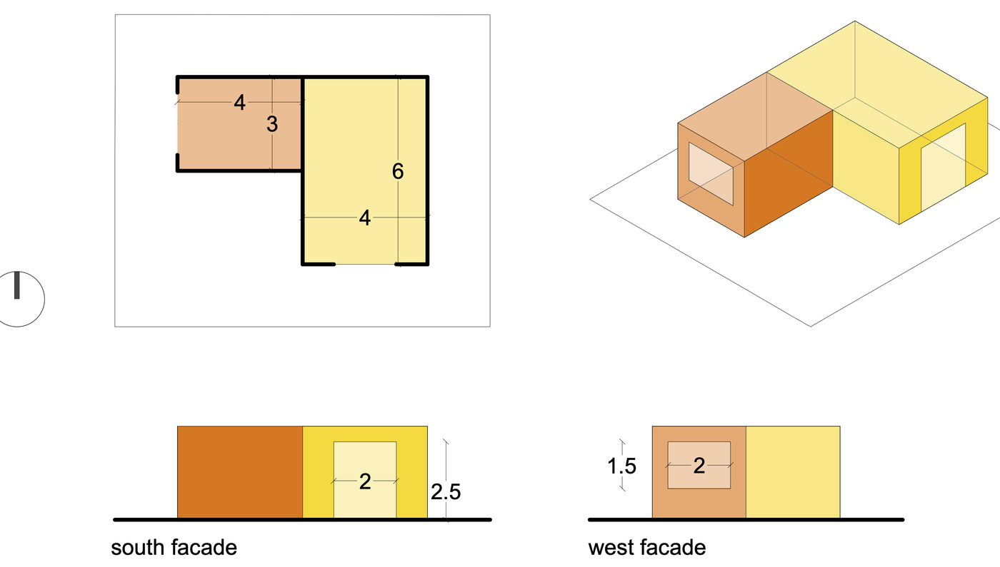
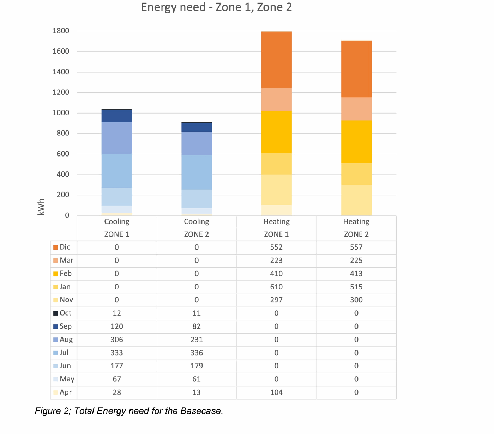
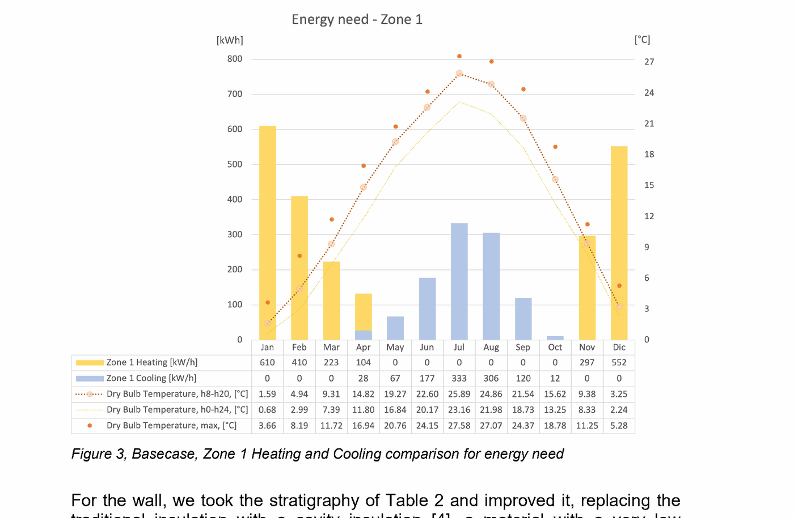
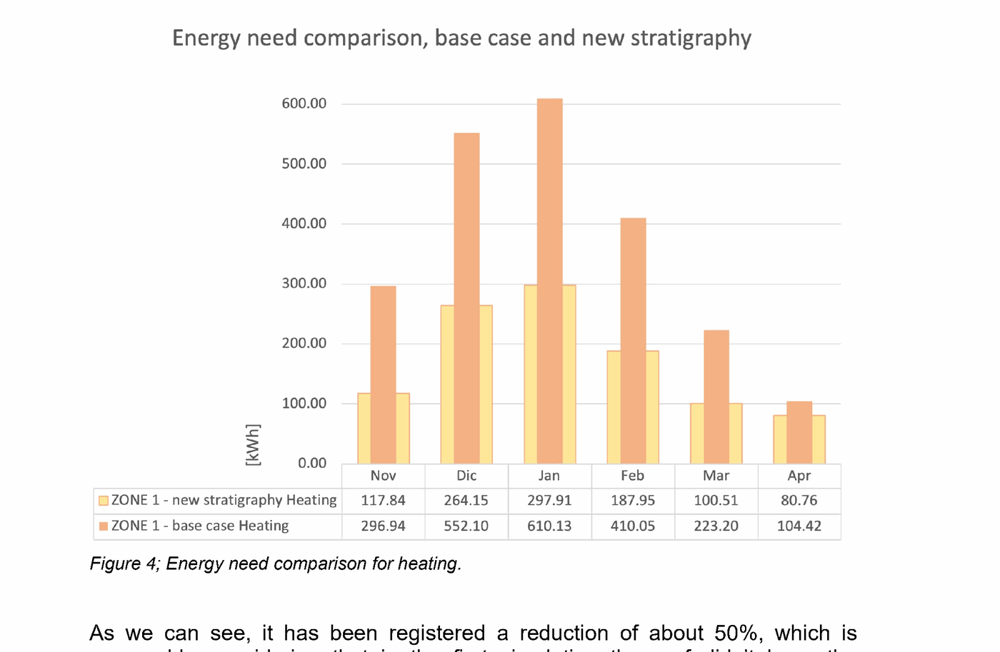
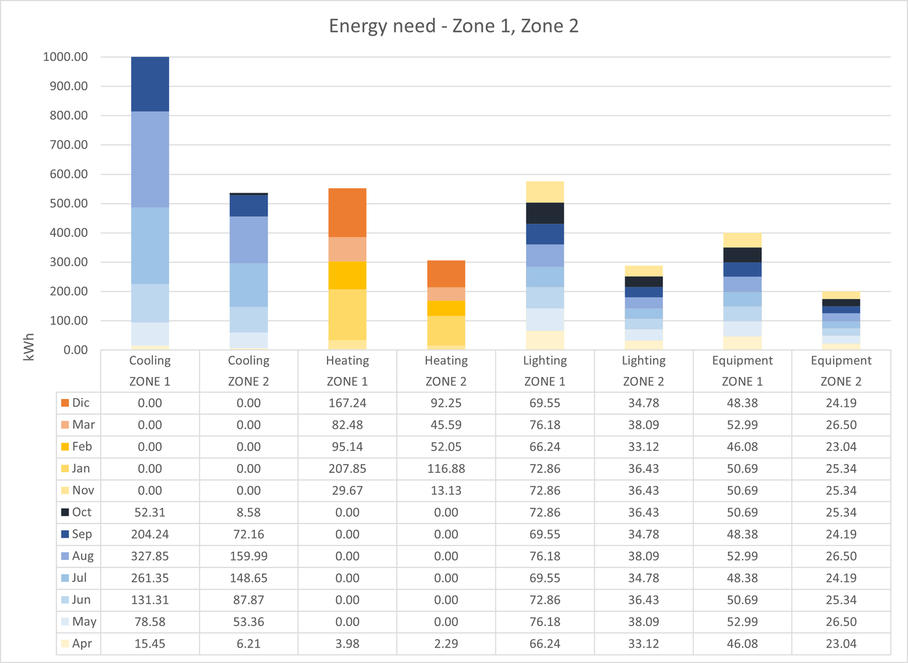
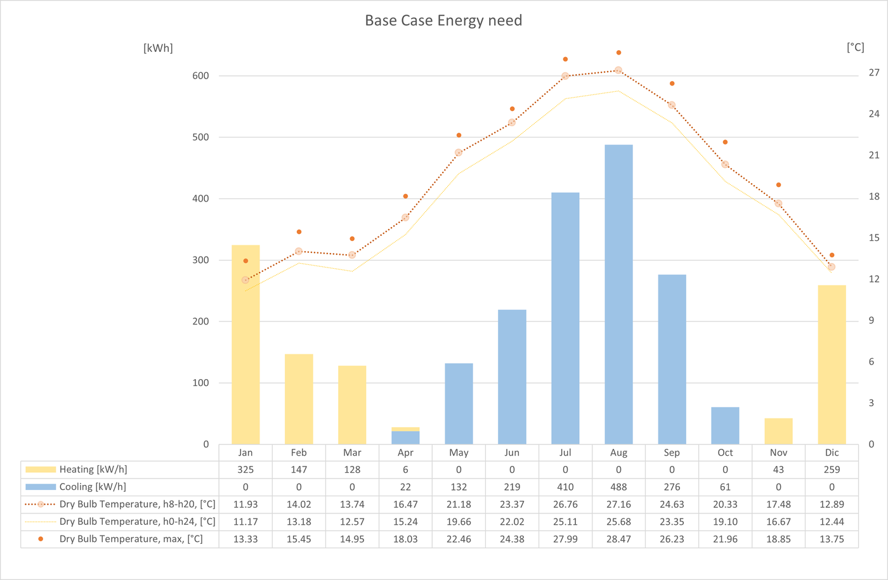
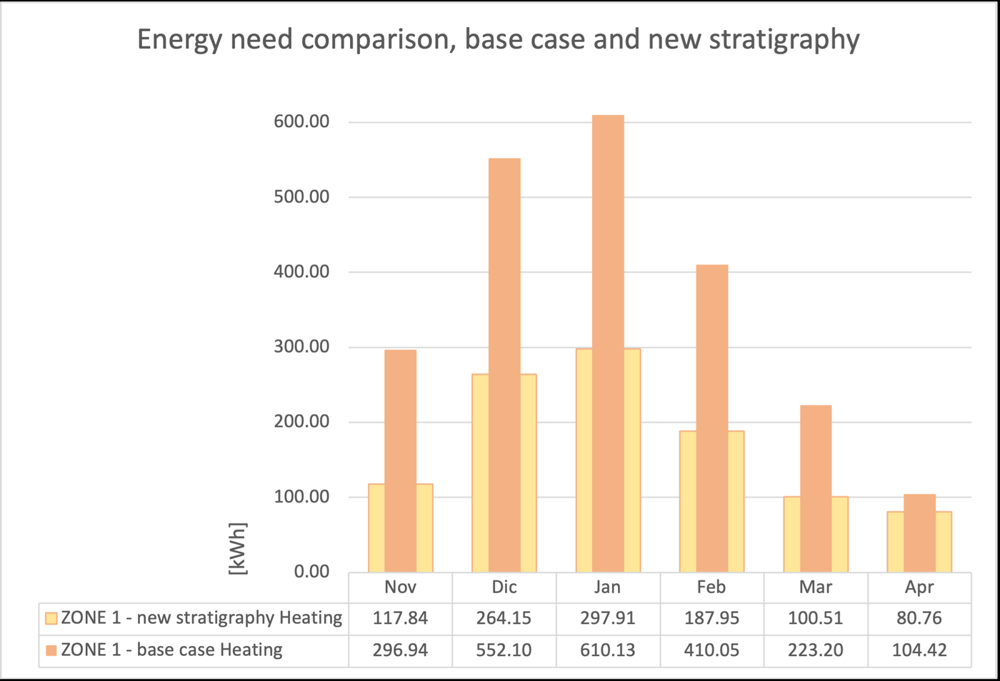
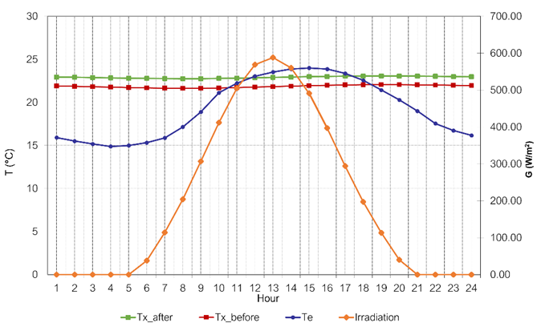
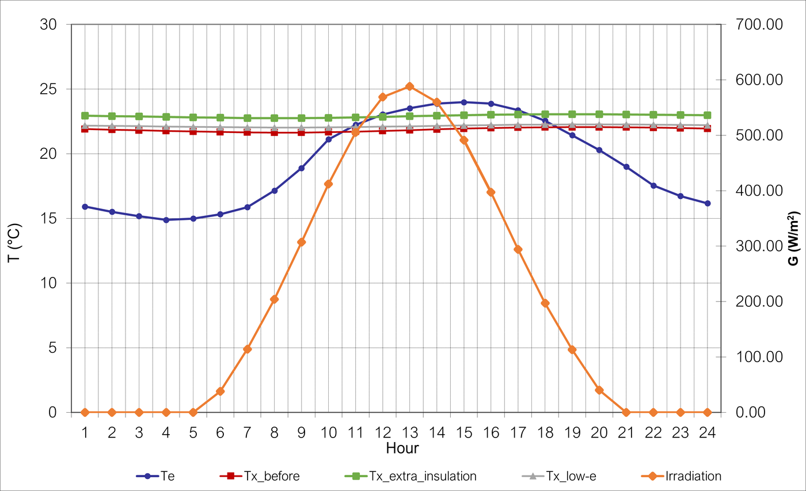

Academic Project · Advanced Building Physics
Multi-zone dynamic energy modelling of a two-zone building, run for two contrasting Italian climates to show how climate flips the design priorities — and how the envelope should respond.
Polytechnic of Milan — Advanced Building Physics · Group 16 · Two case studies: Villafranca di Verona & Palermo Boccadifalco
This project applies Urban Building Energy Modelling (UBEM) through a bottom-up, multi-zone dynamic simulation in UMI to a hypothetical two-zone building. For each climate the workflow is the same: quantify the monthly heating and cooling demand, redesign the envelope stratigraphy to cut the dominant need by at least 15%, and study the effect on indoor temperature with a lumped-parameter model.
The key insight comes from running it in two different climates: the dominant energy need — and therefore the whole optimisation strategy — flips between them.
Two connected zones, adiabatic floor, 3 m height. Zone 1 — 24 m², south window (40% WWR). Zone 2 — 12 m², west window (30% WWR). No inter-zone heat exchange. Each zone uses a distinct envelope archetype (hollow-brick vs. concrete-panel walls, differing insulation and roof build-up); both share a single-glazing wood frame in the base case.

Same building, same method — opposite problem. Verona's continental climate is heating-driven; Palermo's Mediterranean climate is cooling-driven.
| 🏔️ Villafranca di Verona | 🌞 Palermo Boccadifalco | |
|---|---|---|
| Climate | Continental | Mediterranean |
| Weather dataset | 2000–2010 | 2007–2021 |
| Use | Residential | Office spaces |
| Dominant need | Heating | Cooling |
| Optimisation target | Reduce heating | Reduce cooling |
| Key extra strategy | Roof + cavity-wall insulation | + Low-E glazing (solar control) |
| Heating reduction achieved | ~50% | ~50% |
In Verona's continental climate, heating dominates: from November to April the heating demand is about twice the cooling demand. Base-case annual need was 3240 kWh/y for Zone 1 vs. 2922 kWh/y for Zone 2 — so Zone 1 (larger, thermally weaker) set the target.


Replacing the wall insulation with high-performance cavity insulation and adding a roof insulation layer (absent in the base case) brought the roof U-value from 1.46 to 0.34 W/m²K and the wall from 0.57 to 0.36 W/m²K — a ~50% cut in heating demand.

In Palermo's Mediterranean climate the picture inverts: mild winters mean little heating, while hot summers and a long cooling season make cooling the dominant need (more than double the heating demand). Here Zone 2 — the office with the better envelope — drove the higher cooling requirement.


The same insulation upgrade cut the heating need by ~50%, but the heavier, better-insulated envelope traps heat in summer, nudging indoor temperatures up and threatening the cooling load.

A lumped-parameter model (uniform building temperature, convective exchange, explicit time-stepping) tracked Zone 1's indoor temperature over a 24-hour cooling-season cycle. Indoor temperature stays almost flat — good thermal performance — but the extra insulation raises the summer average, so a low-E glazing study (solar factor 0.15) was added to cut solar gains.
| Configuration | Roof U | Wall U | Glazing U | Solar factor |
|---|---|---|---|---|
| Base case | 1.46 | 0.56 | 1.4 | 0.35 |
| Extra insulation | 0.34 | 0.37 | 1.4 | 0.35 |
| Low-E + extra insulation | 0.34 | 0.37 | 1.4 | 0.15 |


Added insulation is highly beneficial in winter and lowers whole-year energy use, but it is not automatically good for cooling — as the Palermo case shows, a heavier envelope can raise summer loads. Pairing the improved envelope with low-solar-factor (low-E) glazing reduces summer solar gains while keeping the winter U-value benefit. Across both climates the study supports a "fabric-first" approach — improve the envelope first — tuned to the local climate and balanced with glazing selection to manage both heating and cooling.